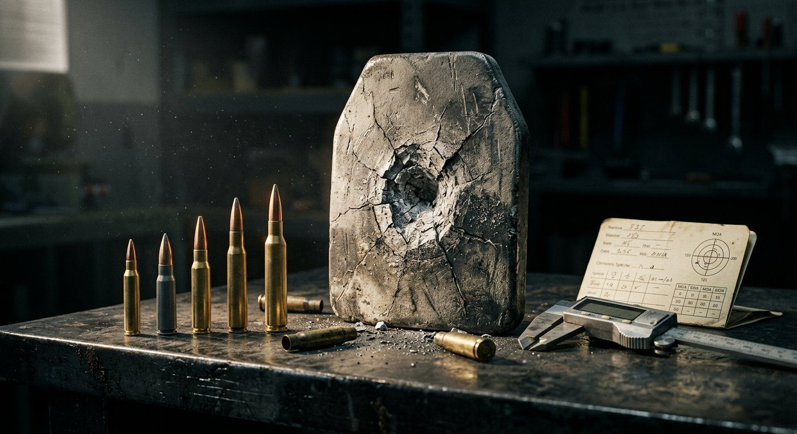

Combien de balles, exactement
Le temps de mort dépend de trois choses : les dégâts de la munition, son niveau de pénétration face à la classe d’armure, et l’endroit touché. Le calcul ci-dessous montre l’écart entre « il me faut six balles » et « il m’en faut deux ».
Le calculateur
Les valeurs de dégâts et de pénétration se lisent dans le stand de tir ou sur la fiche de la cartouche. Le modèle applique la règle des paliers, sans tenir compte de la chute de dégâts à distance : c’est un outil pour comprendre, pas pour trancher un duel.
Un exemple concret : trente-quatre dégâts en pénétration 4 contre une armure classe 4, en poitrine, demandent six balles ; les mêmes balles en tête en demandent trois. Contre une classe 5, on passe à sept. Ce sont ces écarts qui rendent la munition plus importante que le canon.
La règle des paliers
Pense en marches, pas en pourcentages. Deux niveaux au-dessus de l’armure, la balle traverse et frappe à pleine puissance. Un niveau au-dessus, elle traverse en perdant environ un quart de ses dégâts. À niveau égal, la moitié passe et l’autre use la plaque. En dessous, l’armure encaisse tant qu’elle tient debout.
Les membres ne sont jamais protégés. C’est ce qui rend la question « où est-ce que je tire » aussi importante que « avec quoi je tire » : contre un joueur mieux équipé, une munition sous-calibrée au torse ne donne rien, alors qu’une balle dans la jambe continue de compter.
Les cinq munitions d’Aurora
La saison a ajouté cinq cartouches, chacune avec un compromis assumé.
- .300BLK TIV : détonante, pénétration 4, dégâts à 0,95. Explose après plusieurs impacts en trois secondes, dans un rayon de quatre mètres.
- .300BLK TTV : même mécanique, pénétration 5. Le choix entre les deux se fait selon l’armure que tu rencontres, pas selon la puissance ressentie.
- 5,56 CINDER : incendiaire, pénétration 4, dégâts normaux, brûlure à l’impact. Le prix se paie en recul.
- 9×19 7N30 : perforante, pénétration 5 mais dégâts à 0,9 et pénétration d’armure à 0,85. Poudre économique : plus de recul, moins de rendement.
- 5,45 SPALL : perforante, pénétration 4, pensée pour gêner la réparation de l’équipement adverse.
Un niveau de pénétration plus élevé n’apporte pas plus de dégâts par balle. C’est un accès, pas une puissance. Choisis selon la classe d’armure que tu croises réellement dans tes parties.
Le comparateur
Même arme, même cible : les cinq cartouches classées du plus rapide au plus lent à tuer.
Contre une classe 5, avec une arme à trente-quatre dégâts, quatre cartouches sortent à sept balles et la TIV à huit : le multiplicateur de dégâts plus faible de la 7N30 est compensé par son palier de pénétration. C’est exactement le genre d’arbitrage qu’on ne devine pas à l’œil.

Ce qui change vraiment ton temps de mort
- La munition avant l’arme. Passer d’une balle de base à une balle perforante change le nombre de balles ; changer de canon ne le change pas.
- La distance. Les dégâts chutent avec la portée. Une arme réglée pour quarante mètres n’a plus les mêmes chiffres à quatre-vingts.
- La cadence. Deux balles à six cents coups minute laissent plus de temps à la cible que deux balles à neuf cents.
- La durabilité. Une plaque entamée casse plus vite : c’est pourquoi un échange perdu profite toujours au second assaillant.
Les dix-sept calibres, et ce que chacun peut espérer
Une arme ne tire jamais une seule balle : elle tire une famille. La base recense soixante-onze munitions réparties sur dix-sept calibres, et l’écart à l’intérieur d’un même calibre est souvent plus large que l’écart entre deux armes. Le tableau donne, pour chaque famille, le nombre de balles disponibles et les niveaux de pénétration qu’elle atteint réellement.
| Calibre | Balles | Niveaux disponibles | Meilleur | À retenir |
|---|---|---|---|---|
| .338 Lap Mag | 1 | 7 | niv. 7 | plafond à six ou sept |
| 6.8x51mm | 3 | 4 · 5 · 6 | niv. 6 | plafond à six ou sept |
| 7.62x51mm | 4 | 3 · 4 · 5 · 6 | niv. 6 | plafond à six ou sept |
| 7.62x54mm | 4 | 3 · 4 · 5 · 6 | niv. 6 | plafond à six ou sept |
| 12.7x55mm | 4 | — · 3 · 4 · 5 | niv. 5 | une référence sans niveau publié |
| 4.6x30mm | 3 | 3 · 4 · 5 | niv. 5 | milieu de tableau |
| 5.45x39mm | 5 | 1 · 2 · 3 · 4 · 5 | niv. 5 | milieu de tableau |
| 5.56x45mm | 5 | 1 · 2 · 3 · 4 · 5 | niv. 5 | milieu de tableau |
| 5.7x28mm | 6 | — · 1 · 2 · 3 · 4 · 5 | niv. 5 | une référence sans niveau publié |
| 5.8x42mm | 4 | 2 · 3 · 4 · 5 | niv. 5 | milieu de tableau |
| 7.62x39mm | 5 | 1 · 2 · 3 · 4 · 5 | niv. 5 | milieu de tableau |
| 9x39mm | 3 | 3 · 4 · 5 | niv. 5 | milieu de tableau |
| .357 Magnum | 4 | — · 2 · 3 · 4 | niv. 4 | une référence sans niveau publié |
| .45 ACP | 5 | — · 1 · 2 · 3 · 4 | niv. 4 | une référence sans niveau publié |
| .50 AE | 3 | 2 · 3 · 4 | niv. 4 | milieu de tableau |
| 12 Gauge | 5 | — · 1 · 2 · 3 · 4 | niv. 4 | une référence sans niveau publié |
| 9x19mm | 5 | — · 1 · 2 · 3 · 4 | niv. 4 | une référence sans niveau publié |
Trois lectures sortent de ce tableau. Les calibres de fusil de précision (7.62×51, 7.62×54, 6.8×51) montent à six, ce qui laisse la possibilité de percer une plaque de grade 5 sans dépendre d’un tir parfait. Les calibres d’assaut plafonnent à cinq : c’est suffisant contre la majorité des protections rencontrées, insuffisant contre un joueur en grade 6. Et les calibres de pistolet, mitraillette et fusil à pompe s’arrêtent à quatre, ce qui les cantonne au combat rapproché et aux cibles peu ou pas protégées.
Le point qui surprend le plus quand on ouvre la base pour la première fois : le 5.7×28 propose six balles différentes, davantage que le 7.62×51. Un calibre de pistolet-mitrailleur offre donc plus de nuances qu’un calibre de sniper. Sur le terrain, ça veut dire plus de choix à faire, et plus d’occasions de se tromper.
Voir aussi : les armes et leurs builds.